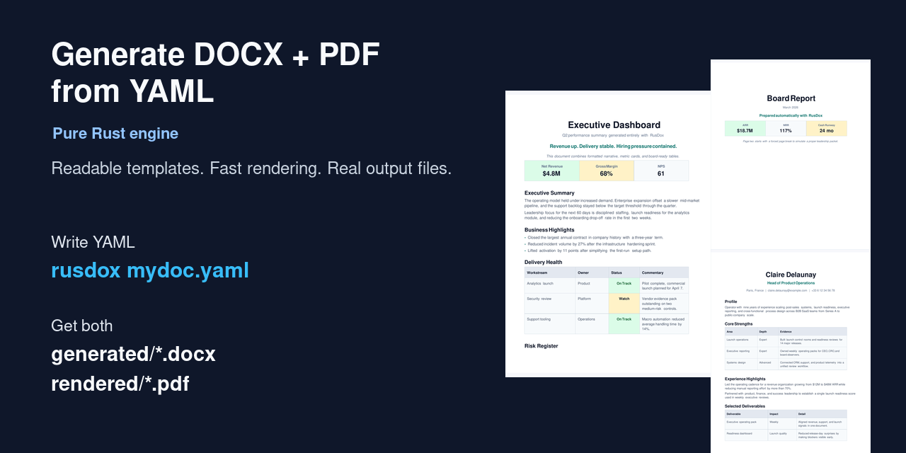

Turn structured data or an approved Word template into an editable DOCX, a directly rendered PDF, and reviewable parity evidence from one local binary.
No Microsoft Word, LibreOffice, LaTeX, cloud account, or document upload is required.
Website · Explore an example · Template registry · Documentation · Compatibility · Releases · crates.io

Why RusDox
Business-document automation usually forces a compromise: keep Word files editable, generate a dependable PDF, avoid an Office runtime, or make the pipeline testable. RusDox targets the intersection.
- Recipients get a real
.docxthey can continue editing. - Automation gets PDF bytes emitted directly from the same typed document model, not a DOCX-to-PDF conversion.
- Authors can use schema-backed YAML/JSON/TOML or retain a designer-authored Word template and populate it from JSON.
- CI can inspect source-located validation, package structure, semantic parity, artifact hashes, page snapshots, and optional visual diffs.
- Documents stay local unless the caller explicitly uploads its own artifacts.
RusDox is not a universal converter or a full Word implementation. If you need arbitrary format conversion, start with Pandoc. If you only need publication-grade PDF typesetting, start with Typst. RusDox is for workflows that need the editable Word handoff and the directly rendered PDF together.
See the complete workflow

The demo ends with inspectable artifacts from the same source:
The browser example explorer is a local structural preview, not a fake PDF renderer. Edited YAML remains in the tab; the page shows the exact CLI command needed to produce verified files.
Get a verified result
Install
macOS or Linux native archive (x86_64 Linux, Intel Mac, or Apple Silicon):
curl -fsSL https://raw.githubusercontent.com/OthmaneBlial/rusdox/2b3ca4eda4ab8389dc0e54198811bbaa3c368e44/scripts/install.sh | shWindows x64 PowerShell:
irm https://raw.githubusercontent.com/OthmaneBlial/rusdox/2b3ca4eda4ab8389dc0e54198811bbaa3c368e44/scripts/install.ps1 -OutFile install-rusdox.ps1
.\install-rusdox.ps1Both installers verify the selected release archive against its published SHA256SUMS. They install only the binary; configuration is created only when you explicitly run rusdox config init or the wizard.
Rust users can install from crates.io:
cargo install rusdox --locked
# or: cargo binstall rusdoxRun the non-destructive demo
rusdox demoRusDox refuses an existing destination and creates this self-contained result:
rusdox-demo/
├── product-launch-brief.yaml
├── rusdox.toml
├── generated/product-launch-brief.docx
├── rendered/product-launch-brief.pdf
└── reports/
├── product-launch-brief-parity.html
├── product-launch-brief-parity.json
└── product-launch-brief-pages/Edit the YAML and rerun the exact rusdox verify command printed by the demo. Use rusdox demo my-first-report to choose another new directory.
Two authoring paths
1. Structured specs for developer-owned documents
version: 1
output_name: client-brief
blocks:
- type: title
text: Client Brief
- type: section
text: Decision
- type: body
text: Launch is approved pending the final security review.
- type: bullets
items:
- Pricing approved
- Support playbook ready
- Security wording pendingrusdox verify client-brief.yamlYAML is the recommended hand-authored format. JSON and TOML use the same versioned document model; the generated JSON Schema and bundled VS Code tooling provide completion and diagnostics.
2. Word-native templates for approved designs
Keep the layout your team already designed in Word, add bounded placeholders, then populate it from JSON:
rusdox template inspect proposal.docx
rusdox template verify proposal.docx data.json --strictTemplate syntax v1 supports nested values, complete paragraph or table-row loops, conditions, five deterministic filters, and reusable partials. Untouched package parts stay byte-for-byte intact. The PDF covers the documented body subset, so arbitrary Word layout fidelity is not implied.
Three first-party examples are available through the signed registry:
rusdox template list
rusdox template search compliance
rusdox template add board-reportThe CLI verifies the Ed25519-signed manifest and every downloaded SHA-256 before an atomic install.
What verification proves
rusdox verify reopens the generated DOCX and compares it with the source model and PDF evidence. Each current report contains 21 checks covering supported text, block order, tables, images and alt text, metadata, package structure, PDF structure, and optional rendered-page differences.
rusdox verify documents \
--output-root build/rusdox \
--format jsonExit code 0 means parity passed, 1 means verification could not complete, and 2 means one or more completed parity checks failed. A green report proves the published RusDox contract; it does not prove pixel-identical rendering in every Word or PDF viewer.
Capabilities
| Area | Current v1 support |
|---|---|
| Outputs | Editable DOCX and directly emitted PDF |
| Inputs | YAML, JSON, TOML, Rust API, and Word templates + JSON |
| Document model | Paragraphs, runs, lists, styles, metadata, images, SVG, tables, headers/footers, links, bookmarks, TOC fields, footnotes, and shared page controls |
| Authoring | Schema, migration, includes, repeaters, bounded conditions and filters, source-located validation |
| Feedback | demo, validate, dev, watch, verify, and reproducible bench workflows |
| Integration | Rust Renderer, JSON protocol over stdio, loopback-only HTTP adapter, and composite GitHub Action |
| Production | Resource ceilings, bounded batch concurrency, atomic output replacement, security review, SBOM, checksums, and build attestations |
The executable compatibility matrix is the source of truth when a feature boundary matters.
Architecture
YAML / JSON / TOML / Word template / Rust caller
│
parse + bounded expansion
│
validation + source locations
│
typed Document model
┌──────┴──────┐
▼ ▼
OOXML writer PDF layout
└──────┬──────┘
▼
semantic + structural + visual evidenceEvery entry point converges on the same validation, document, rendering, and parity layers. Read the architecture guide for module ownership and contribution evidence.
Integrate it
Use the local JSON protocol from Node, Python, Go, or another process without adopting a language-specific SDK:
rusdox serve stdio < request.jsonOr add document verification to a repository. The example pins the reviewed v1.0.0 commit rather than mutable main:
- uses: actions/checkout@v5
- uses: OthmaneBlial/rusdox@c74a0f44bf03065fe5ca4d4d215bd78cac59f8b5 # v1.0.0
with:
input: documents
upload-reports: "false"
comment: "false"Enable report upload or PR comments only when the calling repository's document privacy policy permits it. See the Action guide and integration protocol.
Performance evidence
RusDox publishes a versioned 13-scenario protocol rather than a competitor benchmark. The same 1,000-page dual-output fixture recorded these medians on two different hosts on 2026-08-24:
| Host | DOCX + PDF median | Peak memory |
|---|---|---|
| GitHub Actions, AMD EPYC / Linux x64 | 1.40 s | 152.4 MiB |
| Apple M2 / macOS arm64 | 1.57 s | 334.1 MiB |
The input hash, toolchain, flags, stage timings, output sizes, and raw reports are checked in. Different hosts are observations, not directly comparable scores. Reproduce the protocol with:
cargo build --release --locked --bin rusdox
node scripts/run_benchmark_protocol.mjs --output target/benchmarks/local.jsonRead the methodology, raw history, and performance budgets.
Known limits
- RusDox does not implement all of OOXML. Comments, tracked changes, vertical cell merging, and arbitrary per-section geometry are outside the v1 contract.
- Word-template PDF rendering covers a supported semantic subset; preserved DOCX package parts can contain layout RusDox does not reproduce in PDF.
- PDF output is not currently claimed as tagged PDF, PDF/UA, or PDF/A.
- PDF pagination and line wrapping depend on available/configured fonts. Pin a licensed font set when reproducible layout across hosts matters.
- RTL and CJK text preservation are exercised, but advanced bidirectional shaping and CJK line-breaking remain experimental.
- The current viewer scorecard does not claim full Microsoft Word, LibreOffice, or Acrobat fidelity. Test the exact viewer versions used by recipients.
- The browser playground previews structure only; rendering remains local CLI or library work.
- Native release archives currently cover Linux x86_64 GNU, macOS x86_64/arm64, and Windows x64. Other targets can build from source but are not release-smoked.
See compatibility, the dated viewer scorecard, and troubleshooting before production rollout.
Documentation and examples
- Getting started
- Word templates
- YAML guide
- CLI reference
- Rust API
- Production and batch rendering
- Security review
- Gallery and real example specs
- v1.0.0 release evidence
Roadmap
The engine and v1 contracts are shipped. The next work is evidence-led:
- expand dated visual checks in Word, LibreOffice, and Acrobat;
- validate three external pilot workflows and publish sanitized outcomes;
- grow the signed template registry through real contributor demand;
- reassess the unmaintained font-stack dependencies before v1.2.0;
- add release targets such as Linux arm64 only when downstream demand justifies the support and security surface;
- keep PDF conformance claims gated on validators and human accessibility review.
The complete rationale and historical gates are in ROADMAP.md.
Contributing
Start with a fixture-backed good first issue, then read CONTRIBUTING.md and the architecture map. The contributor lab prepares an isolated fixture and its acceptance checks:
node scripts/contributor_lab.mjs list
node scripts/contributor_lab.mjs prepare protocol-inline-tomlMeaningful merged work is credited in CONTRIBUTORS.md and the relevant release notes.
Security and privacy
Report vulnerabilities through the private process in SECURITY.md. Do not attach confidential business documents to public issues. The threat model, resource limits, residual font-stack maintenance warnings, and release supply-chain controls are documented in the dated v1 security review.
RusDox is licensed under the MIT License.